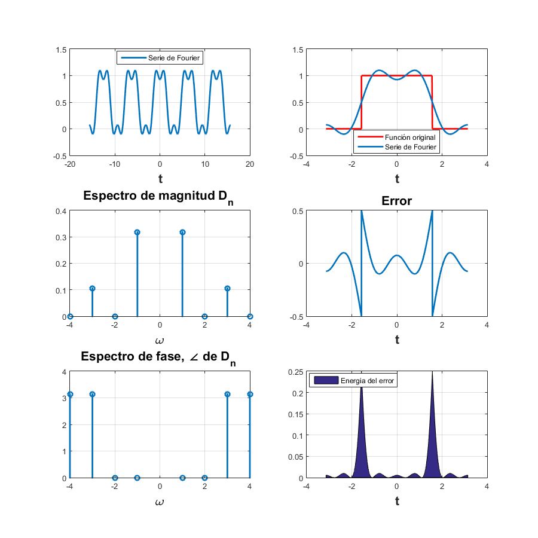
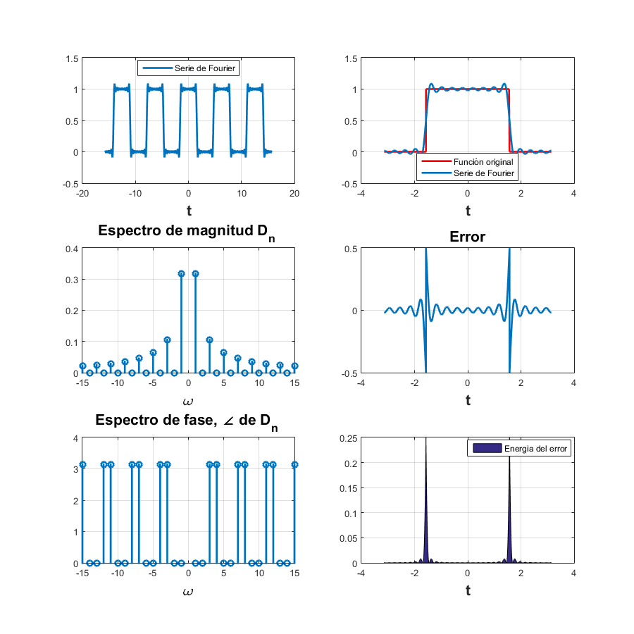
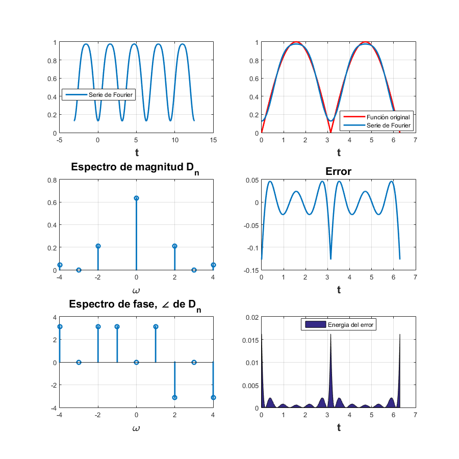
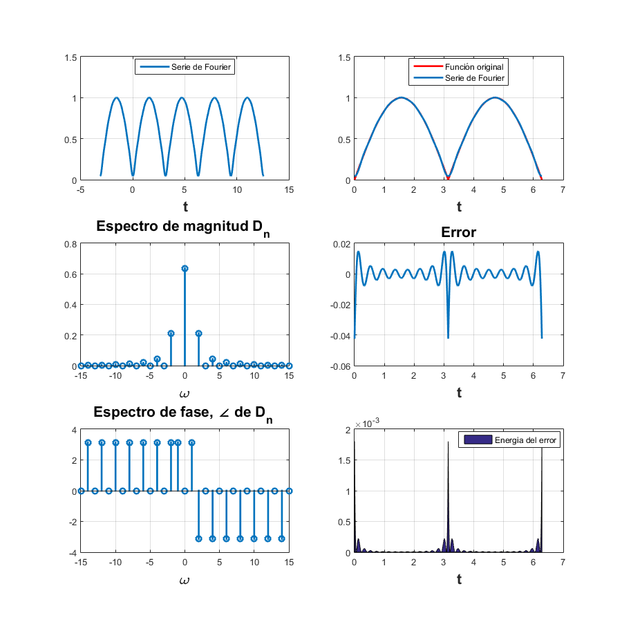

Contents
Ejemplo 6.4
d0=0.5;
dn=@(n)(1./((2*j*pi).*n)).*(exp((j*pi/2).*n)-exp((-j*pi/2).*n));
t0=-pi;
tf=pi;
f=@(t)(t>=-pi/2 & t<=pi/2).* (t./t);
armo=4;
a=-5*(pi);
b=5*(pi);
sfc(t0,tf,dn,d0,f,armo,a,b)

15 armonicos
armo=15;
sfc(t0,tf,dn,d0,f,armo,a,b)

Ejercicio 6.5
d1=0;
d0=2/pi;
dn=@(n) (1/(2*pi)).*((((exp(-(pi*j).*n) + 1).^2))./(-(n.^2)+1));
t0=0;
tf=2*pi;
f=@(t) (t<=2*pi).*abs(sin(t));
armo=4;
a=-pi;
b=4*pi;
sfc1(t0,tf,dn,d1,d0,f,armo,a,b)

15 armonicos
armo=15;
sfc1(t0,tf,dn,d1,d0,f,armo,a,b)

Ejemplo 6.7
d1=0;
d0=2/pi;
dn=@(n) 1/3;
t0=-3;
tf=3;
armo=4;
a=-15;
b=15;
sfc2(t0,tf,dn,d1,d0,armo,a,b)

15 armonicos
armo=15;
sfc2(t0,tf,dn,d1,d0,f,armo,a,b)
Error using sfc2
Too many input arguments.
Error in AsyS (line 44)
sfc2(t0,tf,dn,d1,d0,f,armo,a,b)